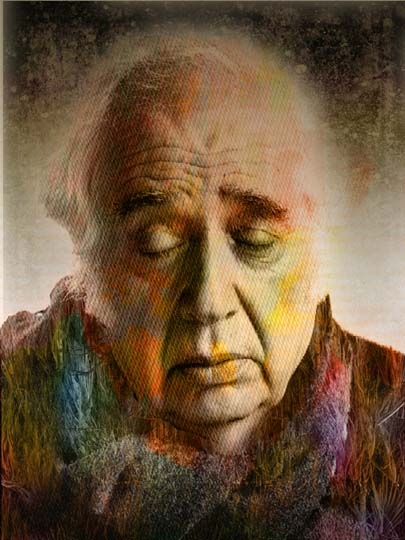

Harold Bloom
Harold Bloom
From a scan of photograph in the New Yorker magazine by Richard Avedon (permission neither sought nor granted). Bloom is a literary critic at Yale and New York University, a legendary if problematical figure in his field, an author of 28 books, an outlandish and majestic character, and his own worst critic and enemy.
|
 |